| Persona 3 | Persona 4 | Persona 5 |
|---|---|---|
| Описание | Описание | Описание |
| Персонажи | Персонажи | Персонажи |
| Опенинги | Опенинги | Опенинги |
| Скриншоты | Скриншоты | Скриншоты |

| Persona 3 | Persona 4 | Persona 5 |
|---|---|---|
| Описание | Описание | Описание |
| Персонажи | Персонажи | Персонажи |
| Опенинги | Опенинги | Опенинги |
| Скриншоты | Скриншоты | Скриншоты |


Shin Megami Tensei: Persona 3 — ролевая игра, разработанная компанией Atlus, четвёртая в серии Shin Megami Tensei: Persona, входящей в более обширную серию игр — Megami Tensei.
В Persona 3 главным героем является школьник, который присоединяется к S.E.E.S. (Specialized Extracurricular Execution Squad, специализированное факультативное исполнительное отделение), группе учеников, исследующих «тёмный час», скрытое время, наступающее ровно в полночь между одним днём и следующим за ним. Во время тёмного часа игрок посещает Тартар, огромную башню, населённую «тенями», созданиями, питающимися разумом людей. Чтобы противостоять теням, каждый член S.E.E.S. может призывать Персону, воплощение своего внутреннего «я». Одной из самых запоминающихся особенностей игры является метод, которым члены S.E.E.S. высвобождают своих Персон: они стреляют себе в голову похожим на обычный пистолет «Вызывателем» (Evoker). В дополнение к обычным для ролевых игр элементам Persona 3 содержит в себе ещё и элементы игр-симуляторов, так как главный герой развивается день за днём на протяжении всего учебного года, заводя друзей и развивая взаимоотношения с ними, что усиливает его Персон в сражениях.
| Главные герои | Персоны | |
|---|---|---|
|
|
Макото Юки (игрок) | Орфей (Orpheus) |
|
|
Митсуро Кириджо | Пентелезия (Penthelesia) |
|
|
Джунпей Иори | Гермес (Hermes) |
| 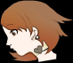 | Юкари Такеба | Ио (Io) |
| 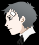 | Акихико Санада | Полидевк (Polydeuces) |
| 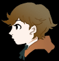 | Кен Амада | Немезис (Nemesis) |
| 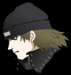 | Шинджиро Арагаки | Кастор (Castor) |
| 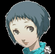 | Фуука Ямагиши | Люсиа (Lucia) |
| 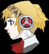 | Аигис | Палладион (Palladion) |
| 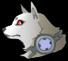 | Коромару | Цербер (Cerberus) |
Опенинги
Persona 3
Persona 3 FES
Persona 3 Portable
Скриншоты
| 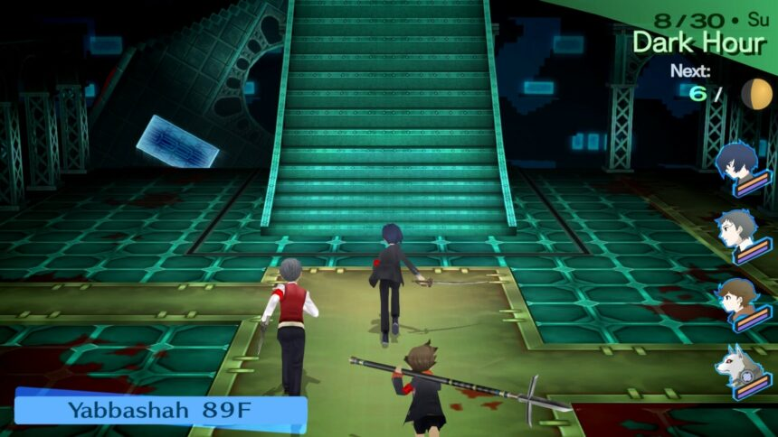 | 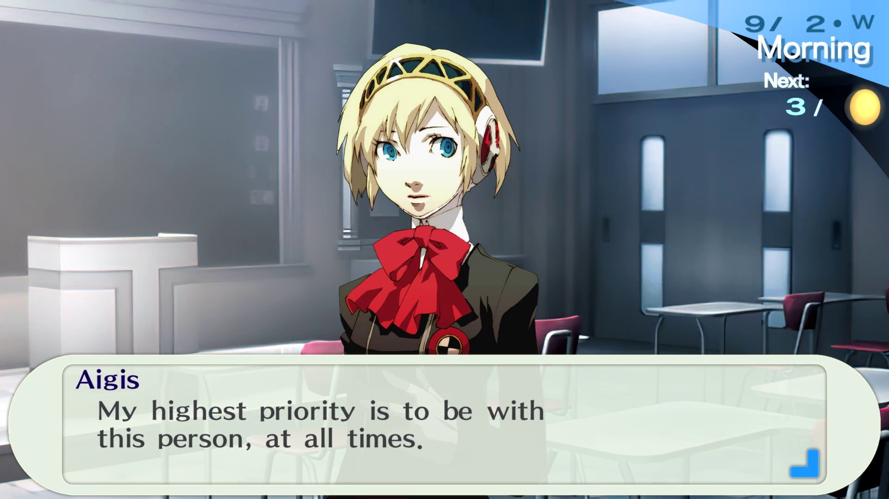 | 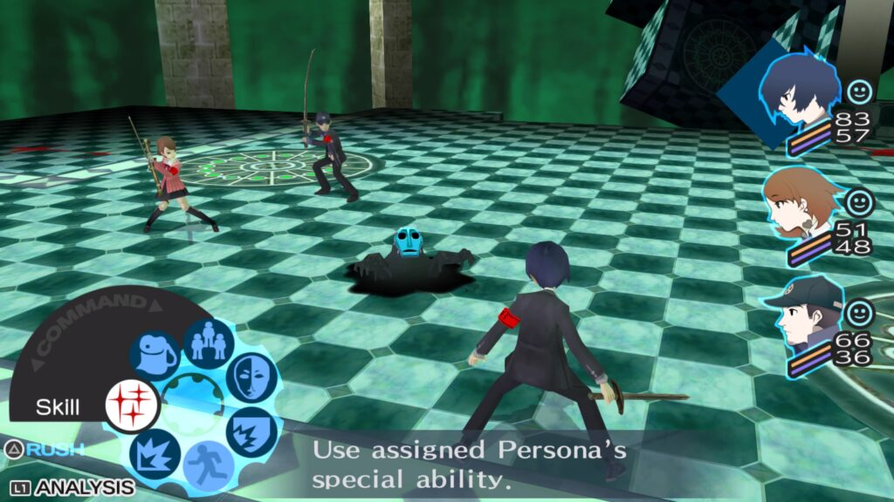 |
| Перемещение по Тартару | Диалоги | Боевая система |

Persona 4 — ролевая игра, разработанная и изданная Atlus для Sony PlayStation 2, хронологически пятая в линейке Shin Megami Tensei: Persona.
Действие игры в отличие от предыдущей части серии происходит не в крупном городе, а в вымышленном сельском городке Инаба, но игровая механика в обеих играх во многом схожа. Главный герой — старшеклассник, на год переехавший из крупного города в сельскую местность. В ходе этого года он оказывается втянут в расследование убийств и получает способность вызывать Персон, особых магических сущностей, носящих имена древних богов, демонов или героев.
| Главные герои | Персоны | |
|---|---|---|
| 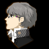 | Ю Наруками (игрок) | Идзанаги (Izanagi) |
| 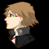 | Йосуке Ханамура | Джирайя (Jiraiya) |
| 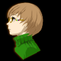 | Чиэ Сатонака | Томоэ Гозен (Tomoe Gozen) |
| 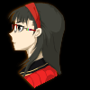 | Юкико Амаги | Конохана-Сакуя (Konohana-Sakuya) |
| 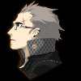 | Канджи Тацуми | Таки-Миказучи (Taki-Mikazuchi) |
| 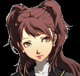 | Рисэ Куджикава | Химико (Himiko) |
| 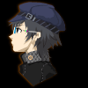 | Наото Широганэ | Сукуна-Хиконо (Sukuna-Hikono) |
| 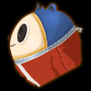 | Тэдди | Кинтоки-Доуджи (Kintoki-Douji) |
Опенинги
Persona 4
Persona 4 Golden
Скриншоты
| 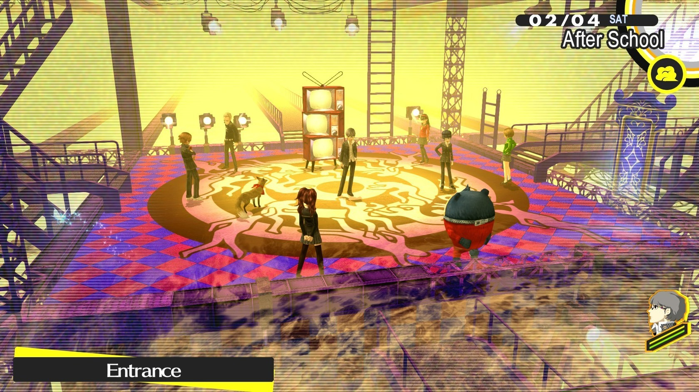 | 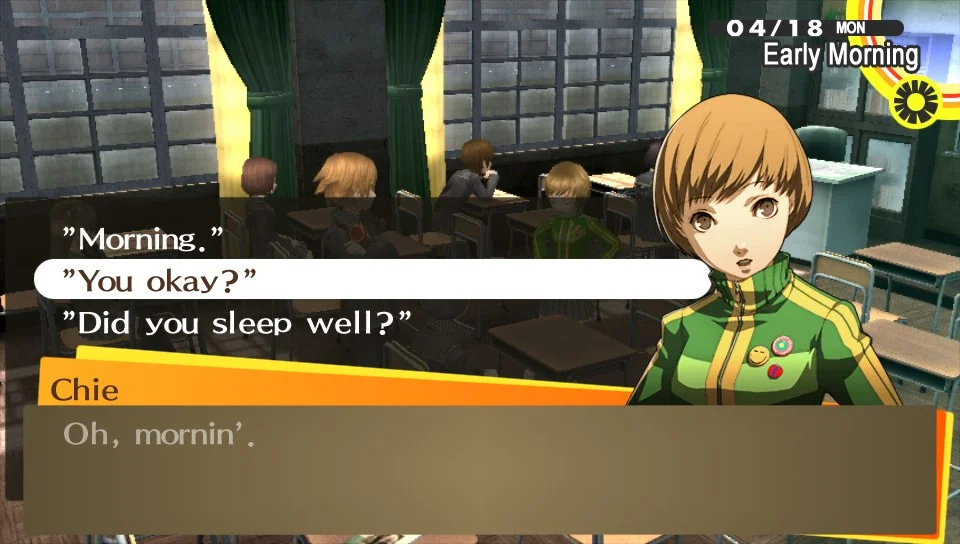 |

|
| Вход в мир теней | Диалоги | Боевая система |
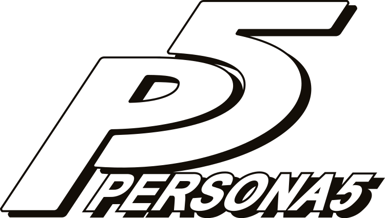


Persona 5 — ролевая видеоигра, созданная студией P-Studio, входящей в состав японской компании Atlus. Хронологически шестая часть серии Shin Megami Tensei: Pesrona.
Действие игры разворачивается в той же вселенной, что и предыдущие выпуски сериала, но по сценарию с ними не связана. В отличие от предыдущих частей, где города были вымышлены, действие происходит в реальном городе Токио и немного на Гавайи. Главным героем, которым управляет игрок, является черноволосый молчаливый и безымянный подросток 16 лет, который носит кодовое имя Джокер. Он учится во втором классе старшей школы Сюдзин, переехал в Токио после того, как его отчислили из школы из-за ложного обвинения в нападении на конгрессмена. Днём главный герой посещает школу и ведёт обычную жизнь, но спокойствие нарушает случайное попадание в альтернативную реальность Дворца и появление кота Морганы, после чего герой вместе со своими друзьями образовывает группу так называемых Призрачных Похитителей Сердец (Fanton Thieves of Hearts) для исследования других Дворцов — мест, созданных силой эмоций человеческих сердец. Группа отправляется на похищение и искоренение злых помыслов и желаний людей из их душевного мира, которые рискуют обернуться опасностью для жителей реального мира.
| Главные герои | Кодовые имена | Персоны | |
|---|---|---|---|
| 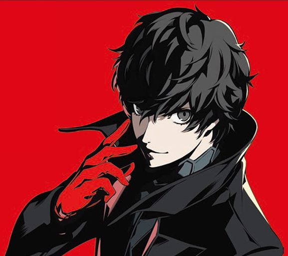 | Рен Амамия (игрок) | Джокер | Арсен (Arsène) |
| 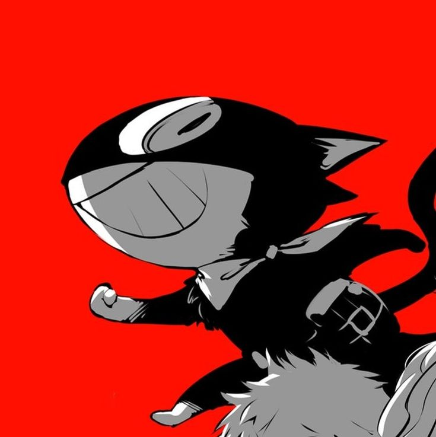 | Моргана | Мона | Зорро (Zorro) |
| 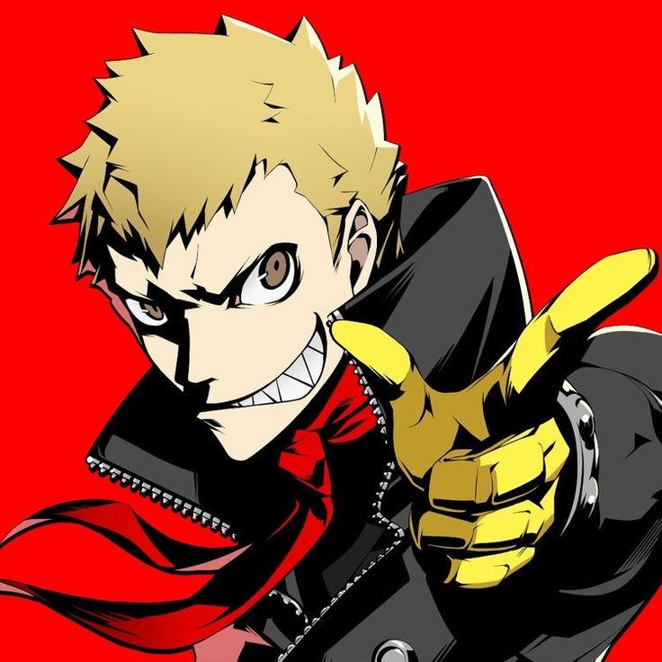 | Рьюджи Сакамото | Череп | Капитан Кидд (Capitan Kidd) |
| 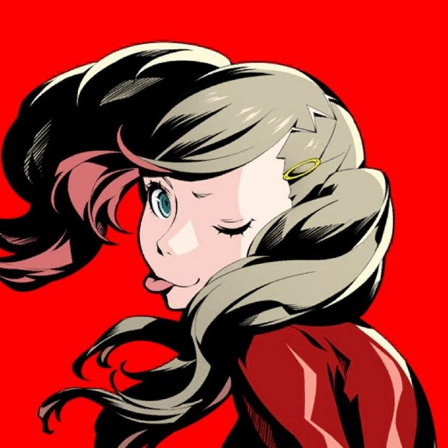 | Анн Такамаки | Пантера | Кармен (Carmen) |
| 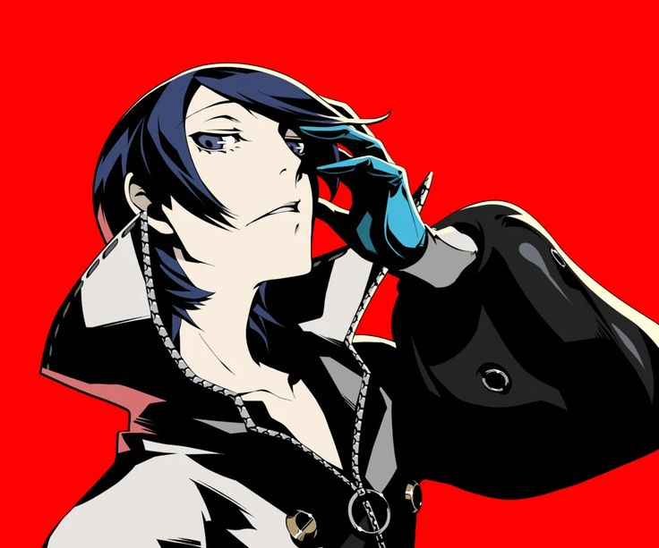 | Юсуке Китагава | Лис | Гоэмон (Goemon) |
| 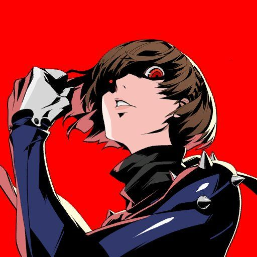 | Макото Ниджима | Королева | Иоанна (Johanna) |
| 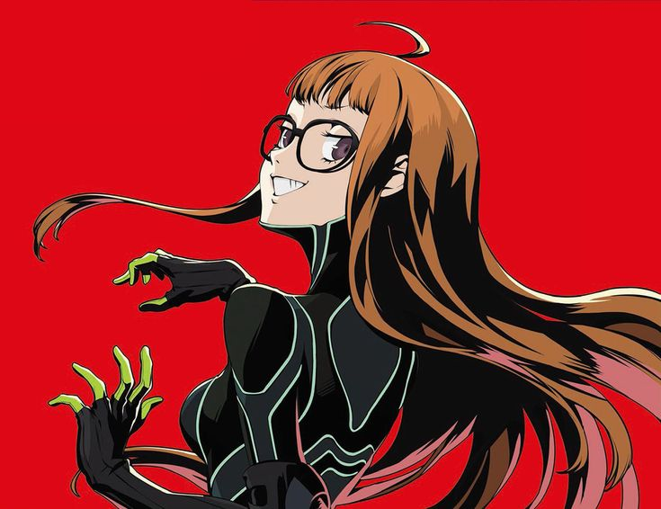 | Футаба Сакура | Оракул | Некрономикон (Necronomicon) |
| 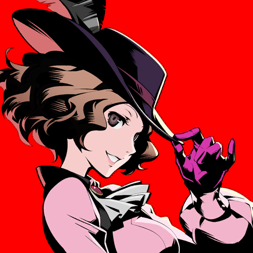 | Хару Окумура | Нуар | Миледи (Milady) |
| 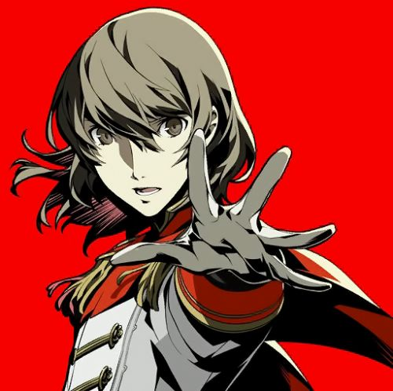 | Горо Акечи | Ворон | Робин Гуд (Roobin Hood) |
Опенинги
Persona 5
Persona 5 Royal
Скриншоты
| 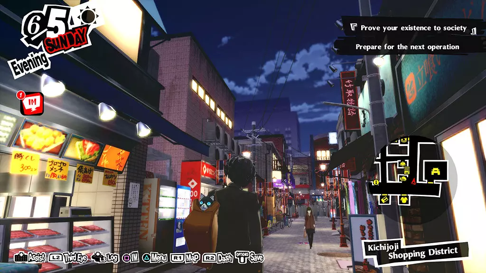 | 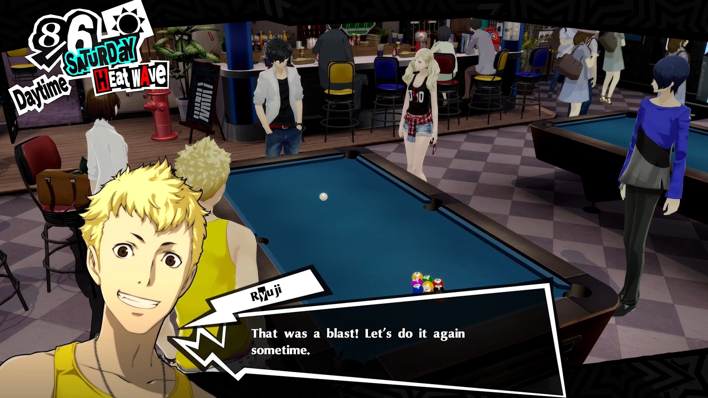 | 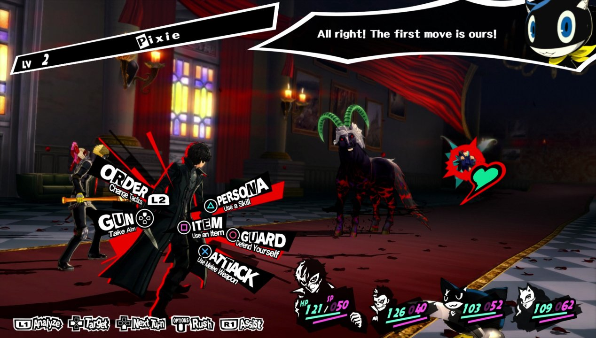 |
| Перемещение по Токио | Диалоги | Боевая система |